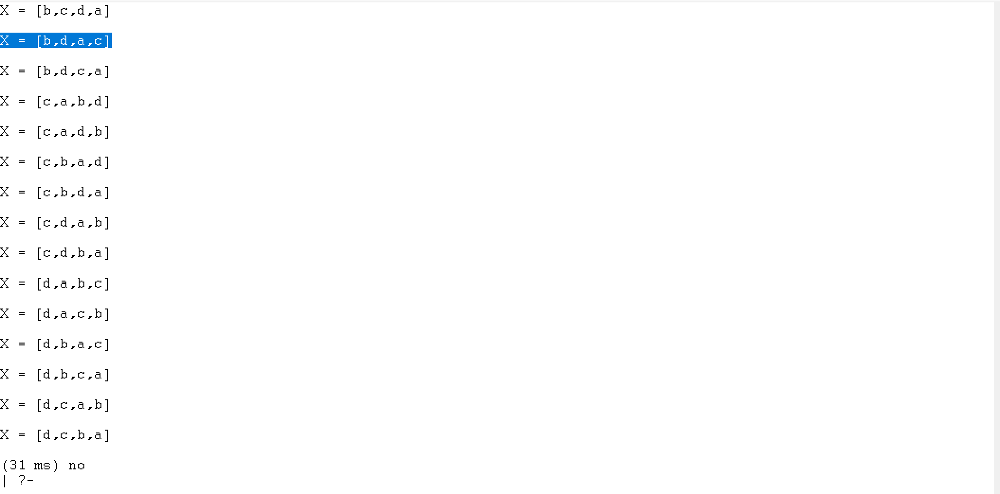
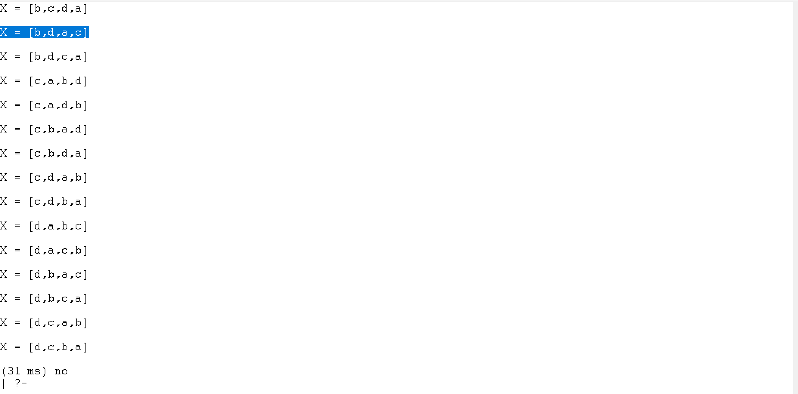
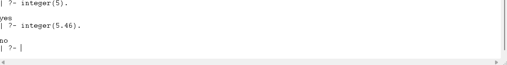

Rodrigo López Rojas
Práctica 4: Paradigma logico
Introducción
Prolog o PROgramming en LOG, es un lenguaje de programación lógico y declarativo.
Funciona más como una base de conocimientos donde dices que cosas son verdaderas y cómo se relacionan. Esto permite responder preguntas preguntas haciendo una búsqueda (consultando) en una base de hechos y reglas para deducir una respuesta (si es que se puede).
El lenguaje Prolog tiene tres elementos diferentes:
Hechos: El hecho es un predicado que es verdadero.
Reglas: Las reglas son extinciones de hechos que contienen cláusulas condicionales. Para satisfacer una regla, estas condiciones deben cumplirse
Preguntas: Para ejecutar un programa prolog preguntas, estas preguntas pueden responderse mediante los hechos y las reglas dadas.
Descarga de GNU Prolog
Primero se descarga el archivo .exe para iniciar la instalación de GNU Prolog
Hello world
Después se realizará una prueba en el programa GNU donde se va a escribir “Hello World”

Posteriormente se cambiará el directorio a la carpeta donde vayamos a crear y guardar los códigos, en este caso si usara el mismo nombre que en el tutorial
Se crea un archivo con la extensión “.pl”

Y se corre poniendo el nombre del archivo entre corchetes

Basics
En este capítulo se cubrirán los siguientes temas
Hechos, reglas y consultas
Se puede definir un hecho como una relación explícita entre objetos y las propiedades que estos pueden tener, por lo tanto lo hechos son incondicionalmente verdaderos.
Por otro lado, las normas se pueden definir como una regla o como una relación implícita entre objetos, por lo tanto son condicionalmente verdaderos.
Las consultas son preguntas sobre las relaciones entre objetos y sus propiedades. La pregunta puede ser cualquier cosa.
Base de conocimientos
Al recopilar los puntos anteriores (hechos, reglas y consultas) se forma una base de conocimiento. Así que se podría decir que una base de conocimiento es un conjunto de hechos y reglas.
A continuación se presentan tres ejemplos de bases de conocimiento
Knowledge Base 1

Knowledge Base 2
Knowledge Base 3

Relations
Las relaciones pueden expresarse mediante hechos y reglas. Existen varios tipos de relaciones, algunas pueden ser también reglas.
Relación familiar
Este es un ejemplo de una relación compleja que se puede formar en Prolog, basado en el siguiente árbol genealógico

Se mapeara en Prolog mediante hecho y reglas, el cual es el siguiente

Ahora se agregaran mas extensiones, donde se crearán relaciones de abuelos


Recursion de las relaciones familiares
También se pueden crear relaciones recursivas


Data objects
Los objetos de datos en Prolog se dividen en varias partes
Atoms
Los átomos son una variante de las constantes, estas pueden ser cualquier nombre u objeto.
Anonymous Variables
Las variables anónimas no tienen nombre, se escriben con un guión bajo (’_’). Cada variable anónima son diferentes.

Operators
Comparison operators
Se utilizan para comparar dos ecuaciones o estados, por ejemplo:
| Operator | Meaning |
|---|---|
| X > Y | X is greater than Y |
| X < Y | X is less than Y |
| X >= Y | X is greater than or equal to Y |
| X =< Y | X is less than or equal to Y |
| X =:= Y | the X and Y values are equal |
| X == Y | the X and Y values are not equal |
Arithmetic Operators
Se utilizan para realizar operaciones aritméticas
| Operator | Meaning |
|---|---|
| + | Addition |
| - | Subtraction |
| * | Multiplication |
| / | Division |
| ** | Power |
| // | Integer Division |
| mod | Modulus |


Loop & Decision Making
Loops
Se utilizan para ejecutar el bloque de código varias veces mediante logica de predicados recursiva, ejemplo:


Ahora un ejemplo de un bucle que tome los valores minimo y maximo utilizando between()


Decision Making
Son sentencias de decisión If-Then-Else. Cuando se cumpla una condición de realizará una tarea


Conjunctions & Disjunctions\
Conjuction
La conjunción (lógica AND) se puede implementar mediante el operador coma. De esta forma los predicados separados por coma se unen con la instrucción AND.
Disjunction
La disyunción (lógica OR) se puede implementar mediante el operador punto y coma. De esta forma, dos predicados separados por punto y coma se unen mediante la instrucción OR.


Lists
Las listas son una estructura de datos que puede utilizarse en diversos casos de programación no numérica. Se utilizan para almacenar átomos como una colección
Representation of Lists
Para representar una estructura los elementos se encierra entre corchetes, cada elemento se separa por comas.
El primer elemento de la lista se llamada cabecera de la lista, y la parte restante se llamada cola
Basics Operations on Lists
| Operations | Definition |
|---|---|
| Membership Checking | Esta operación verifica si un elemento dado es miembro de una lista específica. |
| Length Calculation | Con esta operación, podemos encontrar la longitud de una lista. |
| Concatenation | Operación que se utiliza para unir o agregar dos listas. |
| Delete Items | Esta operación elimina el elemento especificado de una lista. |
| Append Items | La operación de agregar añade una lista dentro de otra (como un elemento). |
| Insert Items | Esta operación inserta un elemento dado en una lista. |
Membership Operation
Podemos comprobar si un miembro X está presente en la lista
##3 Lenght Calculation
Se utiliza para hallar la longitud de la lista
Ejemplo:
Supongamos que el nombre del predicado es list_length(L,N) . Este usa L y N como argumentos de entrada. Esto contará los elementos de una lista L e instancia N con su número. Al igual que en nuestras relaciones anteriores con listas, conviene considerar dos casos:
Si la lista está vacía, entonces la longitud es 0.
Si la lista no está vacía, entonces L = [Cabeza|Cola], luego su longitud es 1 + longitud de Cola.


Concatenation
La concatenación de dos lista implica sumar los elementos de la segunda lista después de la primera
Si la primera lista está vacía y la segundo lista es L, entonces la lista resultante será L
Si la primera lista no está vacía, escriba esto como [Head|Tail], concatene Tail con L2 recursivamente y almacene en una nueva lista con el formato [Head|New List].
Delete form list
Supongamos que tenemos una lista L y un elemento X, tenemos que eliminar X de L. Entonces hay tres casos:
Si X es el único elemento, luego de eliminarlo, devolverá una lista vacía.
Si X es cabeza de L, la lista resultante será la parte de cola.
Si X está presente en la parte de cola, entonces elimine desde allí recursivamente.


Append into List
Sea A un elemento, L1 es una lista, la salida también será L1, cuando L1 ya tiene A.
De lo contrario, la nueva lista será L2 = [A|L1].

Insert into list
Se utiliza para insertar un elemento X en la lista L, y la lista resultante será R


Repositioning operations of list item
| Repositioning Operations | Definición |
|---|---|
| Permutation | Esta operación cambiará las posiciones de los elementos de la lista y generará todos los resultados posibles. |
| Reverse Items | Esta operación organiza los elementos de una lista en orden inverso. |
| Shift Elements | Esta operación desplazará un elemento de una lista hacia la izquierda rotacionalmente. |
| Order Items | Esta operación verifica si la lista dada está ordenada o no. |
Permitation operation
Esta operación permite cambiar la posición de los elementos de la lista y genera todos los resultados posibles
 

Reverse Operation
Se utiliza para invertir los elementos de una lista

Shift Operation
Se utiliza para desplazar un elemento de una lista a la izquierda rotacionalmente

Order Operation
Se utiliza para verificar si la lista dada está ordenada o no

Set operations on lists
Una cláusula que obtenga todos los subconjuntos posibles de un conjunto dado. Por lo tanto, si el conjunto es [a,b], el resultado será [], [a], [b], [a,b]. Para ello, crearemos una cláusula, list_subset(L, X). Esta cláusula tomará L y devolverá cada subconjunto en X.

Union Operation
Una cláusula llamada list_union(L1,L2,L3). Esta cláusula tomará L1 y L2, realizará la unión en ellas y almacenará el resultado en L3

Interserction Operation
Una cláusula llamada list_intersection(L1,L2,L3). Esta cláusula tomará L1 y L2, realizará la operación de intersección y almacenará el resultado en L3. La intersección devolverá los elementos presentes en ambas listas. Por lo tanto, L1 = [a,b,c,d,e], L2 = [a,e,i,o,u], y luego L3 = [a,e].
Misc Operations on Lists
| Miscellaneous Operations | Definición |
|---|---|
| Even and Odd Length Finding | Verifica si la lista tiene un número par o impar de elementos. |
| Split | Divide una lista en dos listas, y estas listas tienen aproximadamente la misma longitud. |
| Maximum | Recupera el elemento con valor máximo de la lista dada. |
| Sum | Devuelve la suma de los elementos de la lista dada. |
| Merge Sort | Organiza los elementos de una lista dada en orden (utilizando el algoritmo Merge Sort). |
Even and Odd Length Operation
Dos operaciones que permiten verificar si la lista tiene un número par o impar de elementos


Divide List Operation
Divide una lista en dos listas con una longitud similar

Max Item Opetarion
Se utiliza para encontrar el elemento máximo de una lista


List Sum Operation
Se utiliza para devolver la suma de los elementos de una lista

Merge Sort on a List

Recursion and structures
Recursion
Es una técnica en la que un predicado se usa a sí mismo para encontrar el valor de verdad, por ejemplo:
-
is_digesting(X,Y) :- just_ate(X,Y).
-
is_digesting(X,Y) :-just_ate(X,Z),is_digesting(Z,Y).
Este predicado es recursivo. Supongamos que just_ate(deer, grass), lo que significa que is_digesting(deer, grass) es verdadero. Ahora bien, si decimos is_digesting(tiger, grass), esto será verdadero si is_digesting(tiger, grass) : just_ate(tiger, deer),is_digesting(deer, grass), entonces la afirmación is_digesting(tiger, grass)` también es verdadera.
Structures
Son objeto de datos que contienen múltiples componentes
Para representar un punto, un segmento de línea y un triángulo usando la estructura en Prolog, podemos considerar las siguientes afirmaciones:
-
p1 − punto(1, 1)
-
p2 − punto(2,3)
-
S − seg( Pl, P2): seg( punto(1,1), punto(2,3))
-
T − triángulo( punto(4,Z), punto(6,4), punto(7,1) )
Matching in Prolog
Se utiliza para comprobar si dos términos dados son idénticos o si las variables de ambos términos pueden tener los mismo objetos tras ser instanciados
Supongamos que la estructura de fecha se define como fecha(D,M,2020) = fecha(D1,abr,Y1), esto indica que D = D1, M = feb y Y1 = 2020.
Se deben utilizar las siguientes reglas para comprobar si dos términos S y T coinciden:
-
Si S y T son constantes, S=T si ambos son los mismos objetos.
-
Si S es una variable y T es cualquier cosa, T=S.
-
Si T es variable y S es cualquier cosa, S=T.
-
Si S y T son estructuras, S=T si
- S y T tienen el mismo funtor.
- Todos los componentes de sus argumentos correspondientes deben coincidir.
Binary Trees
Cada nodo tiene tres campos: datos y dos nodos. Un nodo sin estructura de hijo (nodo hoja) se escribe como node(value, nil, nil) ; un nodo con un solo hijo izquierdo se escribe como node(value, left_node, nil) ; un nodo con un solo hijo derecho se escribe como node(value, nil; right_node) ; y un nodo con ambos hijos tiene como node(value, left_node, right_node).
La definición de la estructura es la siguiente:
node(2, node(1,nil,nil), node(6, node(4,node(3,nil,nil), node(5,nil,nil)), node(7,nil,nil)))

Backtracking
El retroceso es un procedimiento mediante el cual Prolog busca el valor de verdad de diferentes predicados comprobando si son correctos. El término retroceso es bastante común en el diseño de algoritmos y en diversos entornos de programación. En Prolog, hasta que alcanza el destino correcto, intenta retroceder. Una vez encontrado, se detiene.

Ejemplo:


Mientras se ejecuta el código se puede presionar el punto y coma (;)para obtener las siguientes respuestas una por una.
Preventing Backtracking
En tales casos el retroceso incontrolado puede causar una ineficiencia en un programa, para solucionara esto se utiliza la función Cut
Ejemplo de sin el uso de Cut

Ejemplo con uso del cut

Negation as Failure

Different and Not
El predicado diferente comprobada si dos argumentos dados son iguales. Si son iguales devolverá falso, de lo contrario devolver verdadero
El predicado no se utiliza para negar una declaración, es decir, si una declaración es verdadera, será falsa. De lo contrario, si la declaración es falsa, será verdadera
En Prolog, intentaremos expresar las declaraciones de la siguiente manera:
- Si X e Y coinciden, entonces diferente(X,Y) falla.
- De lo contrario, different(X,Y) tendrá éxito.
La sintaxis del prólogo respectivo será la siguiente:
- diferente(X, X) :- !, falla.
- diferente(X, Y).
También podemos expresarlo utilizando cláusulas disyuntivas como las que se indican a continuación:
- diferente(X, Y) :- X = Y, !, falla ; verdadero. % verdadero es el objetivo que siempre tiene éxito
Ejemplo del ejemplo anterior en Prolog:
Ahora un programa que utiliza las cláusulas disyuntivas

No Relation in Prolog
La relación “no” se utiliza para negar una declaración. Significa que si una declaración es verdadera, con “no” será falsa. O en caso de que una declaración sea falsa, con “no”, será verdadera

Inputs and Outputs
Handling input and output
The write() Predicate
Para escribir en la salida se puede utilizar el predicado write(). Toma como entrada y escribe el contenido en la consola

Se debe utilizar comillas simples para imprimir la cadena, si se usan comillas dobles devolver una lista de valores ASCII
The read() Predicate
Se usa para leer desde la consola. Al escribir algo en la consola que puede tomarse como entrada y procesarse. También se puede utilizar para leer archivos.
The tab() Predicate
Se usa para añadir espacios en blanco al escribir algo. Toma un número como argumento e imprime esa cantidad de espacios en blanco.
Reading/Writing Files
Si se quiere escribir en un archivo, excepto en la consola, se puede escribir el predicado tell(). Este predicado toma el nombre del archivo como argumento. Si el archivo no existe, creo uno nuevo y se escribe en él. Ese archivo se abrirá hasta que se escriba el comando told.

The see and seen
Se puede utilizar el predicado “see()” para leer desde un archivo. Este tomará como entrada el nombre del archivo. Una vez completada la operación de lectura se usará el comando “see”


Processing files of terms
Si se quiere leer/procesar todo el contenido de un archivo, se necesita escribir una cláusula para procesar el archivos (process_file) hasta llegar al final del archivo

Manipulating characters
Usando read() y write() se puede leer o escribir el valor de átomos, predicados, cadenas, etc.
Se puede utilizar el put(C) para escribir un carácter a la vez en el flujo de salida actual. “C” puede ser un carácter o u codigo ASCII.

Para leer un solo carácter del flujo de entrada actual se puede utilizar el predicado get_char(C). Si se quiere el código ASCII se puede utilizar get_code
Constructing Atoms
La construcción de un átomo implica crear un átomo a partir de una lista de caracteres o una lista de valores ASCII. Para ello se utilizan los predicados atom_char() y atom_codes(). El primer argumento es una variable y el segundo una lista.

Decomposing Atoms
A partir de un átomo se puede obtener una secuencia de caracteres o una secuencia de códigos ASCII. Para ello se utiliza igualmente atom_chars() y atom_codes(). Pero en ambos casos el primer argumento debe ser el átomo y el segundo una variable.

The consult in Prolog
La consulta es una técnica que se utiliza para fusionar predicado de diferentes archivos. Se puede utilizar el predicado consult() y pasar el nombre del archivo para adjuntar los predicados


Built-In Predicates
Existen tres tipos de predicados predefinidos:
- Términos de identificación
- Estructuras en descomposición
- Recopilando todas las soluciones
| Predicate | Descripción |
|---|---|
| var(X) | tiene éxito si X es actualmente una variable no instanciada. |
| novar(X) | tiene éxito si X no es una variable o ya está instanciada. |
| atom(X) | es verdadero si X representa actualmente un átomo. |
| number(X) | es verdadero si X representa actualmente un número. |
| integer(X) | es verdadero si X representa actualmente un número entero. |
| float(X) | es verdadero si X representa actualmente un número real. |
| atomic(X) | es verdadero si X representa actualmente un número o un átomo. |
| compound(X) | es verdadero si X representa actualmente una estructura. |
| ground(X) | tiene éxito si X no contiene ninguna variable no instanciada. |
The var(X) Predicate
Si X no se inicializa se mostrará como verdadero, si no, se mostrará como falso.
The novar(X) Predicate
Si X no se inicializa se mostrará como falso, si no, se mostrará como verdadero.

The atom(X) Predicate
Devolverá verdadero cuando se pase como X un término no variable con argumento 0 y un término no numérico, de lo contrario sera falso

The number(X) Predicate
Esto devolverá verdadero si X representa cualquier número, de lo contrario sera falso

The integer(X) Predicate
Esto devolverá verdadero cuando X sea un valor entero positivo o negativo, de lo contrario sera falso

The float(X) Predicate
Esto devolverá verdadero si X es un número de punto flotante, de lo contrario sera falso

The atomic(X) Predicate
Es similar a atom(X), solo que acepta números

The compound(X) Predicate
Si atomic(X) falla, los términos son una variable no instanciada o un término compuesto. “Compound” será verdadero cuando pasemos una estructura compuesta
The ground(X) Predicate
Esto devolverá verdadero si X no contiene variables no instanciadas. También verifica dentro de los términos compuestos, de lo contrario, devuelve falso
Decomposing Structures
Al usar estructuras compuestas, no podemos usar una variable para verificar o crear un funtor. Devolverá un error. Por lo tanto el nombre del funtor no puede representarse mediante una variable

The functor(T,F,N) Predicate
Devuelve verdadero si F es el functor principal de T y N es la aridad (número de atributos) de F
The arg(N,Term,A) Predicate
Esto devuelve verdadero si A es el enésimo argumento de Term. De lo contrario, devuelve falso

The ../2 Predicate
Toma dos argumentos.Por lo tanto, Term = .. L.Esto es cierto si L es una lista que contiene el funtor de Term, seguido de sus argumentos


Collecting All the Solutions
Existen tres predicados integrados que ayudan a obtener los resultados. Estos son:
- findall/3
- setoff/3
- bagof/3
The findall/3 Predicate
Este predicado se utiliza para crear una lista de todas las soluciones X, a partir del predicado P. La lista devuelta será L. Por lo tanto, interpretamos esto como «encontrar todas las X, tales que X sea una solución del predicado P y colocar la lista de resultados en L». Aquí, este predicado almacena los resultados en el mismo orden en que Prolog los encuentra. Si hay soluciones duplicadas, todas se incluirán en la lista resultante; si hay infinitas soluciones, el proceso nunca terminará.
Ahora también podemos avanzar en ellos. El segundo argumento, que es el objetivo, podría ser un objetivo compuesto. Entonces, la sintaxis sería findall(X, (Predicado en X, otro objetivo), L)

The setoff/3 Predicate
Setof/3 también es como findall/3, pero aquí elimina todas las salidas duplicadas y se ordenarán las respuestas.
Si se utiliza alguna variable en el objetivo, ésta no aparecerá en el primer argumento, setof/3 devolverá un resultado separado para cada posible instancia de esa variable.
Podemos usar la llamada anidada de setof/3 para recopilar los resultados individuales
Ahora bien, si no nos importa una variable que no aparece en el primer argumento, podemos usar el siguiente ejemplo:

The bagof/3 Predicate
Bagof/3 es como setof/3, pero aquí no elimina las salidas duplicadas y es posible que las respuestas no se ordenen.

Bagof/3 es diferente de findall/3, ya que genera resultados separados para todas las variables del objetivo que no aparecen en el primer argumento

Mathematical Predicates
| Predicado | Descripción |
|---|---|
| random(L,H,X). | Obtiene un valor aleatorio entre L y H |
| between(L,H,X). | Obtiene todos los valores entre L y H |
| succ(X,Y). | Suma 1 y lo asigna a X |
| abs(X). | Obtiene el valor absoluto de X |
| max(X,Y). | Obtiene el valor más grande entre X y Y |
| min(X,Y). | Obtiene el valor más pequeño entre X y Y |
| round(X). | Redondea un valor cercano a X |
| truncate(X). | Convierte un número flotante a entero, eliminando la parte fraccionaria |
| floor(X). | Redondea hacia abajo |
| ceiling(X). | Redondea hacia arriba |
| sqrt(X). | Raíz cuadrada |
Tree Data Structure (Case Study)
Suponiendo que se tiene un árbol como el siguiente
Se van a implementar las siguientes operaciones
- op(500, xfx, ‘is_parent’).
- op(500, xfx, ‘is_sibling_of’).
- op(500, xfx, ‘is_at_same_level’).
- And another predicate namely leaf_node(Node)
En estos operadores, he visto parámetros como (500, xfx, <nombre_del_operador>). El primer argumento (aquí 500) es la prioridad de ese operador. «xfx» indica que se trata de un operador binario y <nombre_del_operador> es el nombre del operador.
Estos operadores se pueden usar para definir la base de datos del árbol. Podemos usarlos de la siguiente manera:
-
is_parent(a, b): indica que el nodo a es el padre del nodo b.
-
is_sibling_of(X, Y): indica que X es hermano de Y. Es decir, si existe un nodo Z que es padre tanto de X como de Y, y X y Y son distintos, entonces son hermanos.
-
leaf_node(Node): un nodo se considera hoja si no tiene hijos.
-
is_at_same_level(X, Y): verifica si los nodos X y Y están en el mismo nivel. Es decir, si X y Y son iguales, devuelve verdadero; de lo contrario, si W es padre de X, Z es padre de Y, y W y Z están al mismo nivel, entonces X y Y también lo están.


More on Tree Data Structure
Ahora se verán algunas operaciones más que se realizarán en la estructura de datos de árbol dado anteriormente
-
path(Node): Muestra la ruta desde el nodo raíz hasta el nodo dado. Para solucionar esto, suponga que X es el padre del nodo, busque path(X) y escriba X. Al llegar al nodo raíz “a”, se detendrá.
-
locate(Node): Esto localizará un nodo (Node) desde la raíz del árbol. En este caso, llamaremos a path(Node) y escribiremos el nodo.
Considerando este árbol

Advances in Tree Data Structures
Ya definimos el árbol anteriormente, por lo que consultaremos el código actual para ejecutar este conjunto de operaciones sin redefinir nuevamente la base de datos del árbol.
Crearemos algunos predicados de la siguiente manera:
-
ht(Nodo,H). Calcula la altura. También verifica si un nodo es hoja; de ser así, establece la altura H en 0. De lo contrario, calcula recursivamente la altura de los hijos del nodo y les suma 1.
-
max([X|R], M,A). Calcula el elemento máximo de la lista y un valor M. Si M es el máximo, devuelve M; de lo contrario, devuelve el elemento máximo de la lista mayor que M. Para solucionar esto, si la lista está vacía, devuelve M como el elemento máximo; de lo contrario, comprueba si Head es mayor que M. Si es así, llama a max() usando la parte final y el valor X; de lo contrario, llama a max() usando la parte final y el valor M.
-
height(N,H). Esto usa el predicado setof/3. Esto encontrará el conjunto de resultados usando el objetivo ht(N,Z) para la plantilla Z y lo almacenará en la variable de tipo lista llamada Set. Ahora encuentre el máximo de Set, con el valor 0, y almacene el resultado en H.